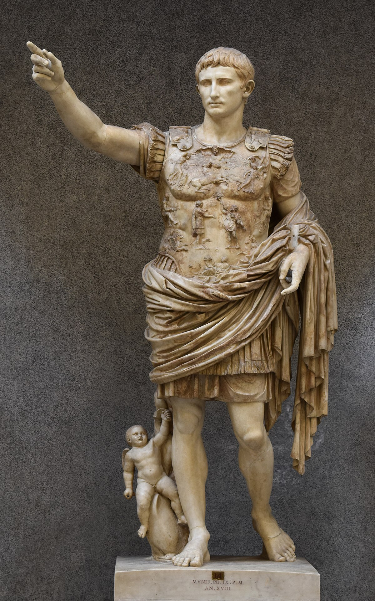
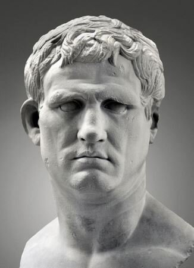

Romos pirmasis imperatorius

Gajus Oktavijus Turinas, vėliau persivadinęs į Gajų Oktavianą Cezarį, (gimęs 63 m. pr. Kr. liepos 23 d.) buvo pirmasis Romos imperatorius, Romos imperijos įkūrėjas po ilgų pilietinių karų. Jis tapo vienu iš galingiausių ir įtakingiausių žmonių istorijoje, o jo valdymas ženkliai pakeitė ne tik Romą, bet ir visą pasaulį.
Pilietiniai karai
Oktavianas buvo Julijaus Cezario sesers, Atijos, sūnus ir Cezario sūnėnas. 44 m. pr. Kr., po Cezario nužudymo, Oktavianas paveldėjo jo vardą ir turtus, tapdamas Cezario įpėdiniu. Pirmasis jo iššūkis buvo politinis chaosas, kilęs po Cezario mirties. Nors Cezaris buvo diktatorius, jis buvo stiprus ir geras valdovas, kuris sustabdė chaosą kamuojantį Romos respubliką. Dėl to Romos žmonės nepritarė Cezario nužudymui. Oktavianas, matydamas gerą politinę progą paaukštinti savo reputaciją kaip Cezario atkeršytojas, suformavo Antrąjį triumviratą kartu su Marku Antonijumi ir Mariu Aemiliu Lepidu, kad nugalėtų Cezario žudikus ir sustiprintų savo valdžią.
Po pergalės Filipo mūšyje (42 m. pr. Kr.) ir triumfo prieš Cezario žudikus, Oktavianas, Markas Antonijus ir Lepidas praktiškai pasidalijo Romos žemes ir Cezario kariuomenę (Oktavianas - Gaulą, Hispaniją ir Italiją, Antonijus - Graikiją, Anatoliją, Syriją, Lepidas - Šiaurės Afriką). Nors pradžioje jie dalijosi galia, tarp trijų politikų kylo įtampa ir nesutarimai, dėl kurių Oktavianas kariavo su Lepidu užimant jo žemes, turtus ir pradedant karą su Marku Antonijumi ir jo sąjungininke bei meiluže - Kleopatra. Dėl Antonijaus sprendimo tekėti už egiptietės ir Romos respublikos teritorijų pervedimo Egiptui, Oktavianas galėjo suburti pakankamai didelį romėnų palaikymą eiti kariauti. Kartu su savo vaikystės draugu Agripa (generolu, kuris prilygo Cezariui) ir masišku romėnų palaikymu, Oktavianas nugalėjo Marką Antonijų ir Kleopatrą Actio mūšyje (31 m. pr. Kr.).

Reformos ir palikimas
Po Egipto užkariavimo prasidėjo laikotarpis, vadinamas Pax Romana (Romos taika), per kurios 200 m. Romos imperijai nekilo didelio pavojaus. Po savo pergalės Oktavianas pakeitė savo vardą į Augustiną ir suteikė sau Princepo (Pirmojo piliečio) titulą. Senatas buvo atstatytas ir oficialiai valdė Respubliką, tačiau tikroji valdžia (mokesčių rinkimas, kariuomenės, svarbiausių provincijų valdymas...) išliko Augustino rankose. Jis pertvarkė administracinę struktūrą, sukūrė nuolatinę kariuomenę ir užtikrino prekybos kelių imperojoje stabilumą ir saugumą, statė monumentus ir statulas savo ir Romos didybei pabrėžti bei išplėtė imperijos sienas Balkanuose ir Germanijoje. Po savo mirties Augustinas, kaip ir Cezaris, buvo aukštinamas kaip dievas ir teišlieka vienas iš labiausiai žinomų romėnų istorijoje.